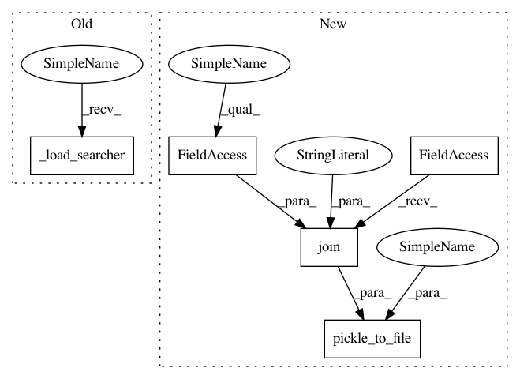

390c2da66962c48403d1cebe56c7b8b3e1843893,autokeras/cnn_module.py,CnnModule,fit,#CnnModule#Any#Any#Any#Any#Any#,21
Before Change
while time_remain > 0:
searcher = pickle_from_file(os.path.join(self.path, "searcher"))
searcher.search(train_data, test_data, int(time_remain))
if len(self._load_searcher().history) >= Constant.MAX_MODEL_NUM:
break
time_elapsed = time.time() - start_time
time_remain = time_limit - time_elapsed
After Change
try:
while time_remain > 0:
self.searcher.search(train_data, test_data, int(time_remain))
pickle_to_file(self, os.path.join(self.path, "module"))
if len(self.searcher.history) >= Constant.MAX_MODEL_NUM:
break
time_elapsed = time.time() - start_time
time_remain = time_limit - time_elapsed
In pattern: SUPERPATTERN
Frequency: 4
Non-data size: 5
Instances
Project Name: keras-team/autokeras
Commit Name: 390c2da66962c48403d1cebe56c7b8b3e1843893
Time: 2018-11-13
Author: jhfjhfj1@gmail.com
File Name: autokeras/cnn_module.py
Class Name: CnnModule
Method Name: fit
Project Name: keras-team/autokeras
Commit Name: 390c2da66962c48403d1cebe56c7b8b3e1843893
Time: 2018-11-13
Author: jhfjhfj1@gmail.com
File Name: autokeras/cnn_module.py
Class Name: CnnModule
Method Name: final_fit
Project Name: jhfjhfj1/autokeras
Commit Name: 390c2da66962c48403d1cebe56c7b8b3e1843893
Time: 2018-11-13
Author: jhfjhfj1@gmail.com
File Name: autokeras/cnn_module.py
Class Name: CnnModule
Method Name: fit